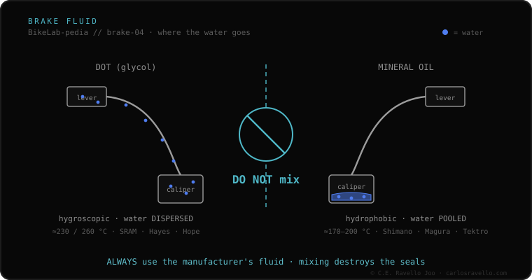

DOT fluid is a glycol-based brake fluid, used by SRAM, Hayes and Hope. It's hygroscopic: it absorbs ambient moisture over time, which is why it's changed periodically. Its dry boiling points are ≈230 °C (DOT 4) and ≈260 °C (DOT 5.1); 4 and 5.1 mix with each other. The critical point: DOT never mixes with mineral oil —it destroys the seals—. And note: DOT 5 (silicone) is a different thing, incompatible, and not used on bikes.
If your brake is SRAM, it almost certainly runs DOT. It's powerful and handles a lot of heat, but it demands respect: it absorbs water and is corrosive.
DOT actively absorbs the moisture that enters through the seals, dispersing it in the fluid so no pockets of pure water form that boil at 100 °C. That keeps the lever firm on long descents. The trade-off: as it accumulates water, its boiling point drops over time and it must be bled periodically. It's also corrosive: it damages paint and skin.

It goes only in brakes designed for DOT (the reservoir cap says so): SRAM, Hayes, Hope. DOT 4 and 5.1 can be interchanged and mixed with each other. It's never put in a mineral-oil brake (Shimano, Magura): DOT's base dissolves the rubber seals in hours.
If you don't know which mount, rotor or fluid your brake uses, send us the case. Real diagnosis, nothing to sell you. Message us on WhatsApp
Yes. 5.1 is compatible and handles more heat; it's a direct upgrade. What you can't do is put in mineral oil.
Because it's hygroscopic: it absorbs moisture through the seals even if you don't ride, and that lowers its boiling point year by year.
No. DOT 5 is silicone and incompatible with bike brakes; 5.1 is glycol, like 4. Don't confuse them.
© 2026 BikeLab Studio. Content under CC BY 4.0: you may copy, translate and publish it, even for commercial purposes. Citation is mandatory. Without attribution, the license terminates automatically (CC BY 4.0, §6.a) and the use becomes copyright infringement: we request the removal of the content and its deindexing. · Design and ownership: Carlos Ravello Joo